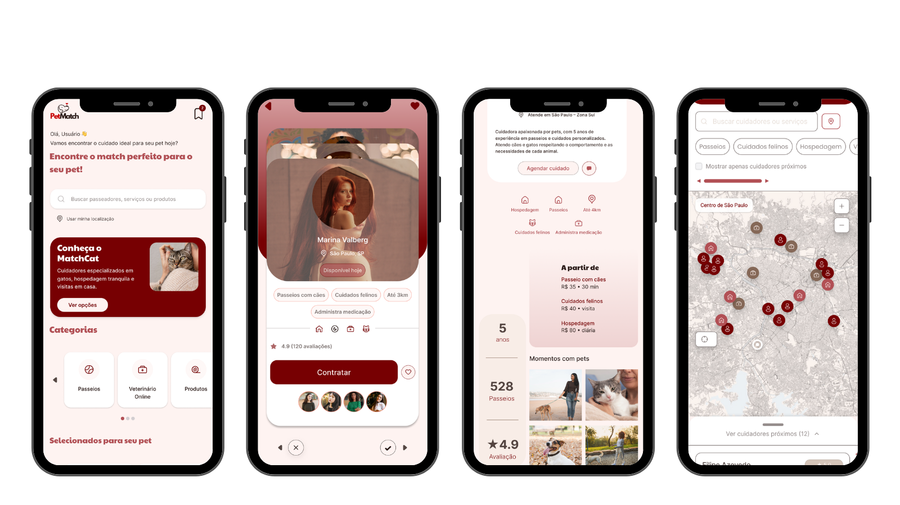
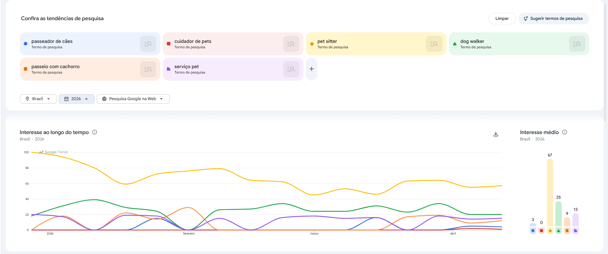
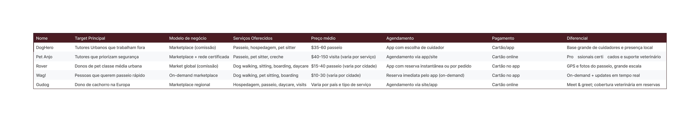
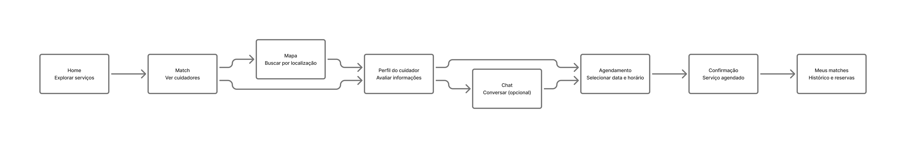
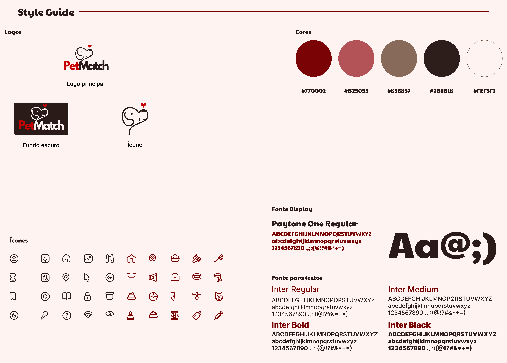

PetMatch
Aplicativo de conexão entre tutores e cuidadores de pets, com foco em compatibilidade, confiança e praticidade.

Contexto
Projeto acadêmico desenvolvido durante o curso de UI/UX Design, com o objetivo de criar uma solução digital para conectar tutores de pets a cuidadores e serviços especializados.
Problema
Encontrar alguém confiável para cuidar de um pet envolve segurança, compatibilidade e disponibilidade. Muitos usuários têm dificuldade em confiar em desconhecidos e encontrar serviços organizados e acessíveis.
Solução
O PetMatch propõe uma experiência baseada em match, onde o usuário pode encontrar cuidadores compatíveis com seu pet, visualizar perfis detalhados, conversar, agendar serviços e acompanhar tudo dentro do aplicativo.
Pesquisa
A pesquisa incluiu análise de concorrentes, entrevistas exploratórias com usuários e levantamento de hipóteses sobre comportamento e tomada de decisão na contratação de serviços pet.



Insights
- Confiança é o principal fator na decisão de contratação
- Usuários preferem cuidadores com avaliações e referências
- Compatibilidade com o pet é tão importante quanto localização
- Informações claras reduzem insegurança
Fluxo do usuário
O fluxo foi estruturado para guiar o usuário desde a descoberta até a contratação do serviço.

Decisões de design
- Remoção do preço na tela de match para reduzir poluição visual
- Reposicionamento do mapa como parte da exploração
- Ajuste do escopo para manter clareza e usabilidade
Protótipo
Ver no FigmaIdentidade visual
A identidade foi desenvolvida para transmitir proximidade, cuidado e confiança, utilizando uma paleta quente e tipografia clara para facilitar a leitura e navegação.

Reflexão
O projeto ainda está em fase de refinamento e não passou por testes formais com usuários. Algumas decisões foram tomadas com base em lógica de produto e ajustes iterativos, considerando limitações de tempo.